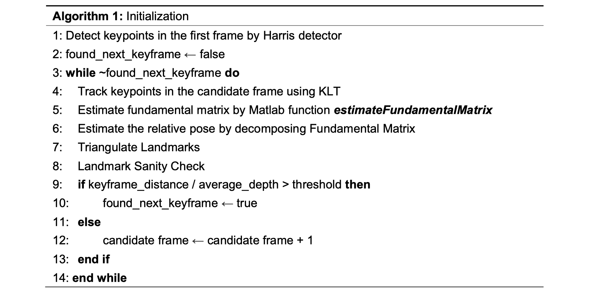
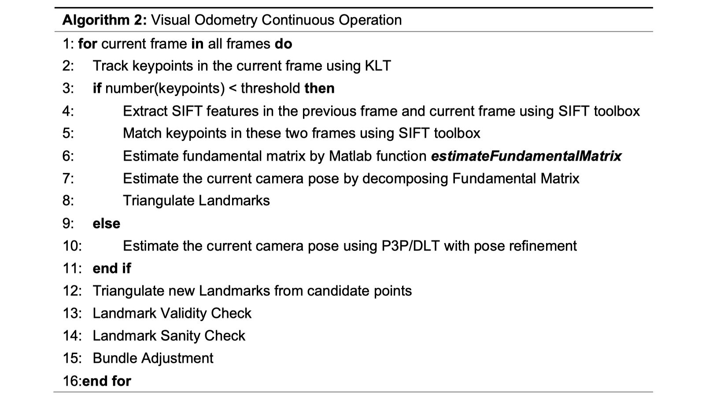

The objective of this project is to implement a simple, monocular, visual odometry (VO) pipeline with the most essential features:
initialization of 3D landmarks, keypoint tracking between two frames, pose estimation using established 2D - 3D correspondences,
and triangulation of new landmarks. And test the pipeline on Parking, Kitti and
Malaga datasets. Additional features can result in bonus points.
The pipeline contains two main parts: initialization and continuous visual odometry operations:


Beyond the fundamental functions, we also implemented some interesting additional features including automatics keyframe selection,
comparison and analysis of different feature detectors, non-maxima suppression in feature detection, combination of SIFT and DLT/P3P in pose refinement,
bundle adjustment with sliding window and own dataset collection using Duckiebot.
Detailed descriptions can be found in report. Following the above pipeline, we analyzed the results on the three given datasets.
At last, we demonstrated how do we collect our own dataset and adopted the pipeline onto it with some necessary steps.
Meanwhile, we proposed some alternative methods to solve the cause of failure in the visual odometry process.